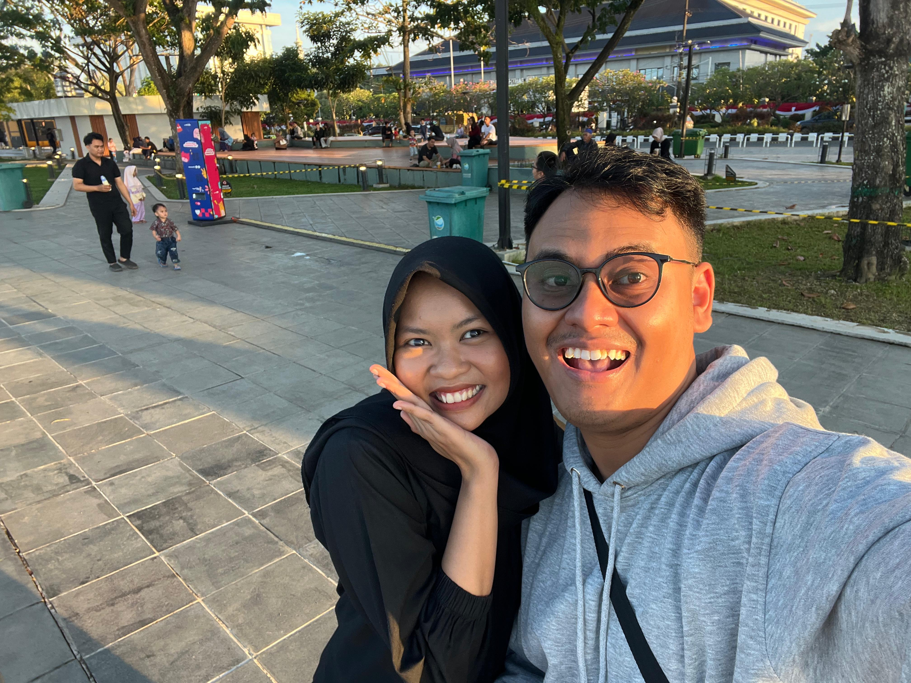
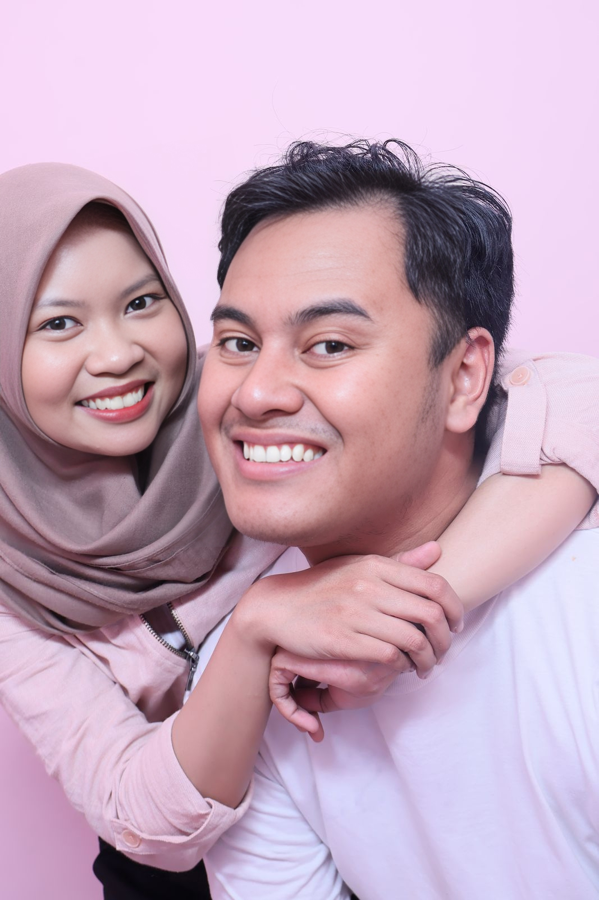
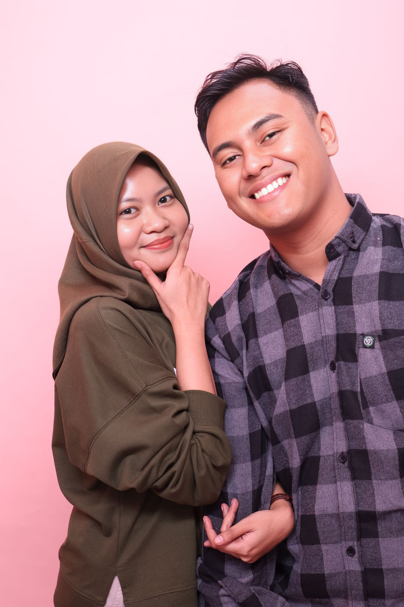
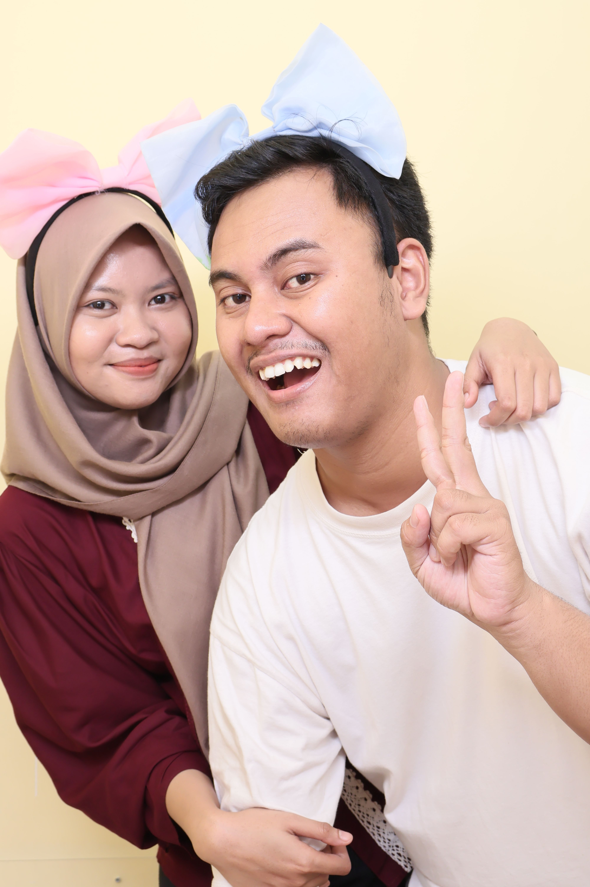

Happy 1st Anniversary ❤️
From your lovely, Farhan to my endless love, Rica
Haloo sayang.. Sayang happy anniversary yaaaa, terima kasih telah menjadi bagian dalam hidupku 🤍
🗓Kisah Kita
📸 Galeri Kenangan




Ini voice note sayang, naikkan sedikit volumenya yaa 🤍